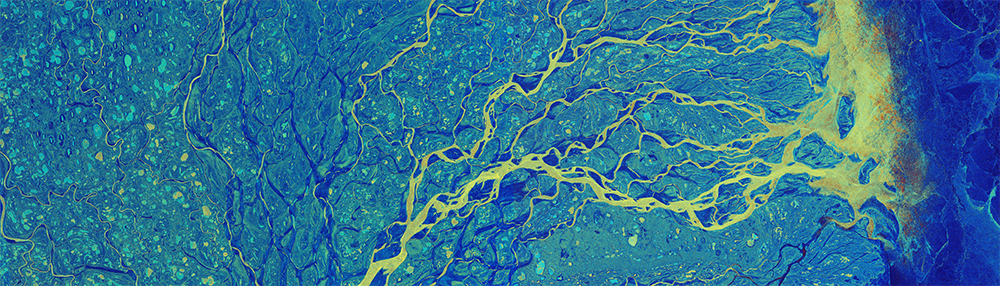

The Global Open Series in Environmental Economics (GoSee) is a global, open-source network of professionals working to develop solutions for the most pressing environmental challenges of our time. Our goal: Evidence-based solutions that inform policy and can be easily implemented. As such, we aim to bring together academics, policymakers, NGOs, and the private sector to strengthen the connection between the interests of research communities and the needs of individuals on the ground who seek sound and implementable solutions.
GoSee aspires to be an inclusive network. We are particularly interested in attracting to the network colleagues from developing countries, where the magnitude of the environmental challenges is acute and, in some cases, institutions have limited capacity to tackle them. Our goal is to build capacity of researchers who, by relying on existing administrative data and features of institutions, can advance quasi-experimental methods for policy evaluation. We also hope to help disseminate research and transfer knowledge across the regions of the network.
Recognizing the big-data/data-science revolution, and with pockets of administrative data dispersed around different regulatory agencies and the private sector, we hope the GoSee network will foster global collaborations and provide a mechanism to reduce the costs of assessing these data. For example, through the establishment of future ‘Global Open Environmental Solutions (GoEs) Hubs’ in mega- and rapidly-growing cities around the world, local researchers in these cities can facilitate data collection, can partner with scholars from other regions in the world, and disseminate research results.
Because so much of the economics profession has historically Western-centric, GoSee aims to create a platform where scholars from other regions of the world will have a venue to present new ideas and educate others about unique and potentially critical challenges and institutional features that may be lost when research is conducted from afar. Ultimately, this cross pollination of ideas will generate new ideas and foster stronger global collaborations.
GoSee also aspires to become a source of inspiration for the next generation of students who are considering future careers in Environmental Economics, as well as a platform for junior scholars in the field. All workshops will be posted at gosee.io, and will be available for educational purposes. Further, there will be an open online discussion forum where anyone can raise questions, and leave comments.
The initial infrastructure of GoSee started with
Subsequently, dozens of researchers from across the globe have come together to help scale up and support GoSee. And we expect many more to join. As our network will grow, we will establish a more formal structure for the network.
The initial group of supporters of GoSee will facilitate the organization of online workshops, assist with the review of submissions, and contribute to the development of a framework for global research collaborations. We need everybody. If you are interested in joining and participating in our activities, please register here.
Image credits: ESA/Copernicus/Sentinel-2, CC BY-SA 3.0 IGO